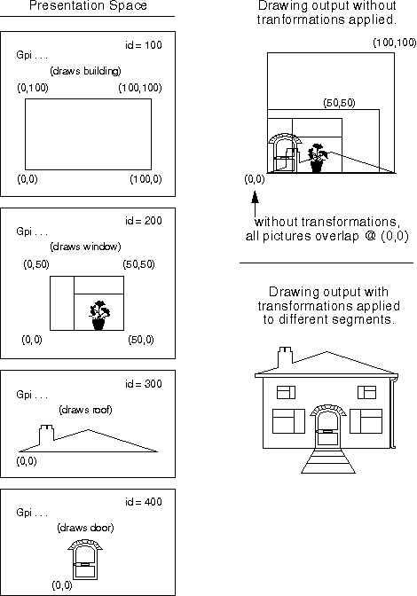
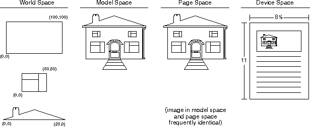
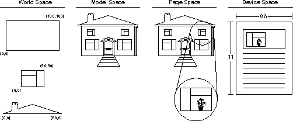

To better understand the workings of transformations other than the identity transformation, an example of the picture assembly process is illustrated in the following figure, and a detailed explanation follows.

Picture Assembly Process
In the world space of the preceding figure four segments are drawn, each containing a different subpicture. The units of the subpictures can be different (for example, the building might be measured in feet, while the window might be measured in inches), because each subpicture is converted to the scale of the completed picture when it is transformed into the completed picture. All of the subpictures in the previous figure are defined at "real world" scales in their own (Cartesian) world coordinate space.
The difference between applying and not applying transformations can be seen in the model space in the previous figure. Without transformations, the subpictures would be drawn at exactly the coordinates given in the world space and thus all four subpictures would overlap. With transformations, the subpictures can be scaled and translated to the scale of the final picture. The window subpicture, Segment id=200 has been scaled, rotated, and translated.
The model space contains the model of what the application is trying to draw. There can be more than one model space for very complex drawings, but this is not a recommended style of programming.
The building also resides in the page space and is prepared in the device space for printing on an 8 and a half by 11 sheet of paper. This is shown in the following figure. Most often the page space to device space transformation (the device transformation) is the identity transformation.

Different Spaces
The transformation process in the previous figure is acting on segments. To draw the composite picture in model space, create a segment chain that plays all four segments associated with the building. The purpose of the world-to-model-space transformation is to transform the graphic segments into a composite picture.
Having built the composite picture, the next step is to map the composite into the page space. Usually, the model-to-page-space transformation is the identity transformation. The different coordinate spaces are shown in the previous figure.
The user might want an exploded diagram as well as the composite picture. This is illustrated in the following figure. To create the exploded diagram, the application must draw the segment chain again, with a slight translation down, and scaled up (enlarged) with a very large scaling factor.
Again, while it is possible to create several complex images in different model spaces that must be assembled in the page space, the most frequent use of the page space is to prepare a view of the model-from-model space with the first application of "real world" units such as inches or millimeters. As shown in the previous figures, both world and model space share unitless Cartesian coordinates.
The usual purpose of the page space is to show multiple views of the image residing in the model space, as shown in the following figure.

Different Spaces with an Exploded View
The enlarged image on the right side of the page space is drawn after the image on the left. It therefore has a higher priority and therefore would be drawn on top of the left side image. To obtain a multi-viewed page space image, the application defines a clipping region, and applies this region to the second (enlarged image) playback of the segment chain. The clipping region permits the enlarged image to appear only on the right side of the page space.
The same building also resides in this model space, but it resides in the page space, along with an exploded view of the uppermost right side window. The view is enlarged to such a magnitude that the details of the window are once again evident. If the images in world coordinate space are not able to be drawn in the amount of detail now supported by the PM, then drawing details, such as an exploded view, would reveal the barrenness of the image.
Subpictures can be drawn in world coordinate space without being drawn inside a graphics segment.